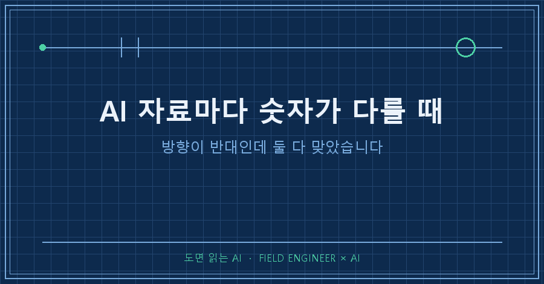
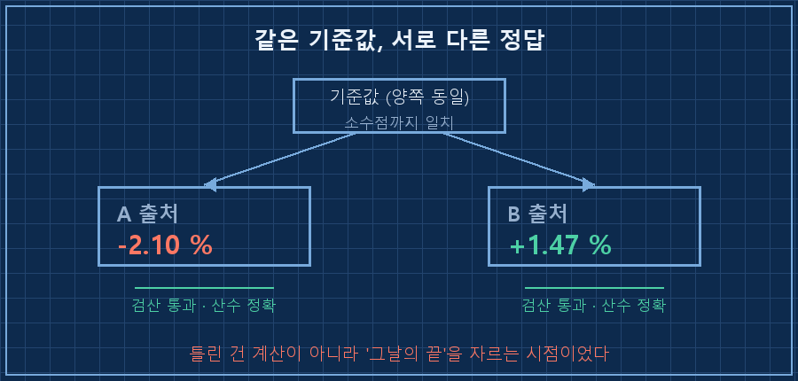
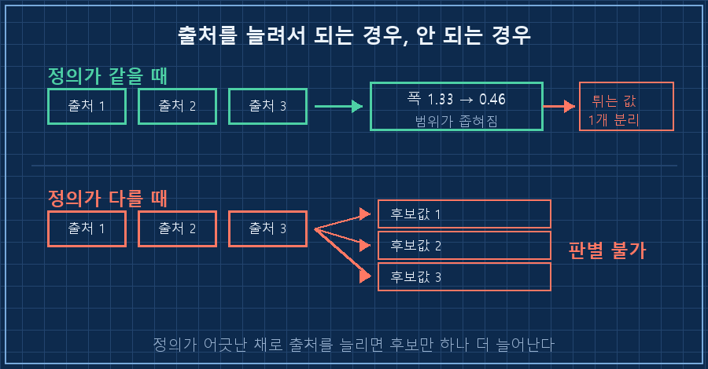
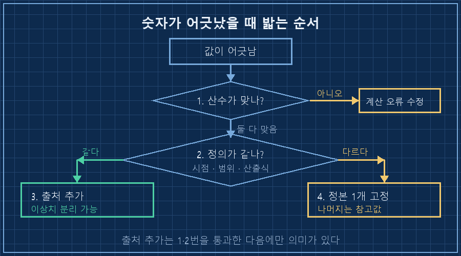

오늘 새벽 네 시에 제 자동화가 지표 하나를 놓고 변화율 두 개를 물어왔어요.
한쪽은 -2.10%, 다른 쪽은 +1.47%.
크기도 아니고 방향이 반대입니다.
계산기를 두드려 봤어요. 둘 다 산수가 맞았습니다.
결론부터 적을게요.
AI 자료마다 숫자가 다를 때 먼저 의심할 건 계산이 아니라 정의예요. 기준 시점이나 집계 범위가 다르면 두 값이 다 정확하면서 서로 다를 수 있습니다. 그리고 이 경우엔 출처를 하나 더 붙여도 안 풀려요. 갈래만 셋이 됩니다.
2026년 9월 기준이고, 매일 새벽에 혼자 도는 개인용 브리핑 자동화에서 나온 얘기입니다. 도구가 뭐든 AI한테 바깥 숫자를 물어다 쓰는 구조면 똑같이 걸려요.
설비 하나에 계기가 수십 개씩 붙습니다. 저는 그 값 읽고 합격인지 아닌지 판정하는 일을 15년쯤 했어요. 현장에서 값이 안 맞으면 제일 먼저 묻는 게 "어디서, 언제 잰 값이냐"거든요. 정작 AI가 물어온 숫자엔 그 질문을 안 하고 있었습니다..
방향이 반대인데 검산은 둘 다 통과했어요
며칠 전부터 새벽에 받아 적은 값이 다음 날 뒤집히는 일이 이어졌어요.
그래서 나흘 전에 규칙을 하나 넣었습니다. 서로 다른 두 경로로 얻은 값이 일치할 때만 확정, 한쪽만 잡히면 잠정으로 적기.
규칙은 잘 돌았어요. 첫날 7건을 정정했고 그중 4건은 소수점까지 맞아서 확정, 3건은 잠정으로 남았습니다.
솔직히 그때는 이제 다 잡았다고 생각했어요. 절차가 생겼으니까요.
오늘은 그 잠정으로 남은 것들을 털어보려고 했어요. 이미 확정된 값을 기준점 삼고, 출처별 등락폭으로 거꾸로 계산해서 맞춰보는 방식입니다.
[04:00:02] 브리핑 시작
전진 검증 시도 → 실패, 그 실패가 정보
확정 기준값 + 출처별 등락폭으로 6개 지표 검증 → 5건 판별 불가
같은 기준값에서 -2.10% 와 +1.47% 가 둘 다 산수 정확
→ 산술 오류가 아니라 '종가 시점 정의' 차이. 제3소스 추가로 해결 안 됨
[04:19:04] 종료코드: 0여섯 개 중 다섯 개가 판별 불가였어요. 종료코드는 0입니다. 프로그램은 멀쩡히 다 돌았고, 답만 안 나온 거예요.
이게 자동화의 고약한 점이에요. 실패가 빨간 글씨로 안 뜹니다. 그냥 "판별 불가"라는 담담한 한 줄로 지나가요. AI 자료마다 숫자가 다를 때 저 한 줄을 그냥 넘기면, 다음 날 또 같은 자리에서 스무 분을 씁니다..

틀린 건 계산이 아니라 '어디까지를 그날 값으로 보느냐'였어요
기준값은 양쪽이 소수점까지 똑같았습니다. 그런데 결과가 반대로 나왔어요.
그러면 남는 후보는 하나뿐이에요. 각 출처가 그날의 끝을 다른 시점으로 잡고 있었던 겁니다.
숫자를 지우고 구조만 남기면 이런 모양이에요. 아래는 실제 값이 아니라 이해를 돕는 재구성 예시입니다.
기준값 100.00 (A·B 동일)
A 출처 마감값 97.90 → (97.90-100)/100 = -2.10%
B 출처 마감값 101.47 → (101.47-100)/100 = +1.47%
두 계산 모두 정확함
다른 것은 계산식이 아니라 '마감값을 언제로 자르느냐'여기서 습관대로 세 번째 출처를 붙이면 어떻게 될까요.
세 번째 출처도 자기 나름의 기준으로 자른 값을 내놓습니다. 답이 좁혀지는 게 아니라 후보가 하나 더 늘어요.
현장에서 유량계 두 대가 다른 값을 낼 때랑 똑같습니다. 한 대는 순간값, 한 대는 적산값을 보고 있으면 계기를 세 대째 붙여도 안 맞아요. 고칠 건 계기가 아니라 "무슨 값을 보기로 했는지"거든요. 저는 이걸 현장에선 당연하게 따지면서 화면 속 숫자에는 안 따지고 있었습니다..
재밌는 건 같은 날 다른 지표에선 출처 추가가 통했다는 거예요. 값이 벌어져 있던 항목 하나는 출처를 셋으로 늘리자 폭이 1.33에서 0.46으로 좁아졌고, 혼자 튀던 값 하나를 이상치로 떼어낼 수 있었습니다. 세 곳이 같은 방식으로 계산한 값이었거든요.
| 상황 | 출처를 늘리면 | 해야 할 일 |
|---|---|---|
| 정의가 같은데 값이 흩어짐 | 범위가 좁혀짐, 이상치 분리 가능 | 출처 추가가 정답 |
| 정의가 다름 (시점·범위·산출식) | 후보만 하나 더 늘어남 | 정본 하나를 정하고 나머지는 참고 |

그래서 순서를 바꿨습니다
값이 어긋났을 때 저는 곧장 "어디가 맞는지 더 찾아봐"라고 시켰어요. 그 한 줄이 오늘 헛일을 만들었습니다.
이제는 이 순서로 갑니다.
1. 검산부터. 산수가 틀린 건지 확인
2. 둘 다 맞으면 정의 대조. 기준 시점·집계 범위·산출식 세 가지
3. 정의가 같을 때만 출처 추가
4. 정의가 다르면 정본 하나를 고정하고 나머지는 참고값으로 강등
같은 날 하나 더 걸린 게 있어요. 어제 브리핑이 "월요일 값으로 다시 대조하겠다"고 두 번 썼는데, 그 월요일은 시장이 쉬는 날이었습니다. 존재하지 않는 날을 약속한 거죠. 그래서 규칙을 한 줄 더 붙였어요.
# 자동화 지시서에 추가한 줄
재대조를 예고할 때: 휴장 캘린더를 먼저 조회하고
실제 거래일 날짜를 명시할 것그리고 오늘 제가 받은 교정 중 제일 아팠던 문장.
이중 확인을 통과했다는 건 절차를 지켰다는 뜻이지, 숫자가 맞다는 뜻이 아닙니다. 실제로 어제 잠정으로 남겨둔 값들은 오늘도 여전히 출처끼리 어긋나 있어요.

이런 질문이 오실 것 같아서요
Q. 그냥 출처 하나만 정해서 쓰면 되지 않나요?
그게 4번 항목이에요. 다만 순서가 중요합니다. 검산도 안 해보고 하나로 정하면, 진짜 계산 오류가 섞여 있어도 그대로 굳어버려요. 정의가 다르다는 걸 확인한 뒤 고정하는 것과, 귀찮아서 하나만 보는 건 결과가 같아 보여도 다른 일입니다.
Q. 어느 쪽을 정본으로 골라야 하나요?
정확한 쪽이 아니라 기준이 공개돼 있는 쪽을 고릅니다. 산출 기준을 명시한 출처는 나중에 값이 바뀌어도 왜 바뀌었는지 추적이 되거든요. 기준을 안 밝힌 출처는 오늘 맞아도 내일 왜 틀렸는지 알 수가 없어요. AI 자료마다 숫자가 다를 때 제가 최종적으로 보는 건 값의 정확도가 아니라 이 추적 가능성입니다.
숫자가 안 맞으면 자료를 더 찾는 게 성실해 보이지만, 오늘은 그게 스무 분짜리 헛수고였어요.
그래도 완전한 손해는 아니었습니다. 판별 불가 5건이 남긴 건 "모르겠다"가 아니라 "여긴 대조로 풀 문제가 아니다"라는 판정이었으니까요. 못 푼 걸 못 푼다고 적어두는 것도 결과입니다!
여러분은 AI가 물어온 숫자를 볼 때, 값보다 그 값의 기준을 먼저 확인하고 계신가요?
이 규칙들이 하루하루 어떻게 늘어났는지는 makefield.ai에서 이어서 보실 수 있어요.